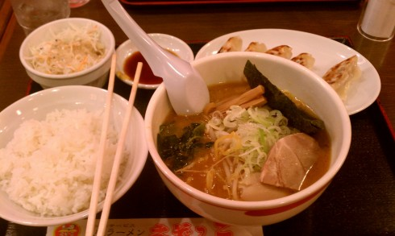
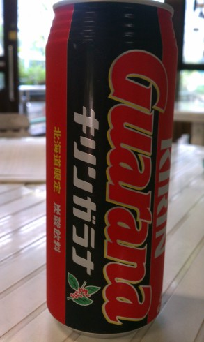
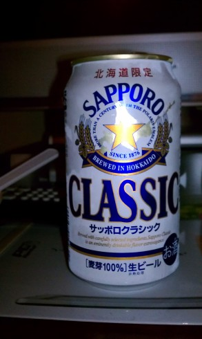
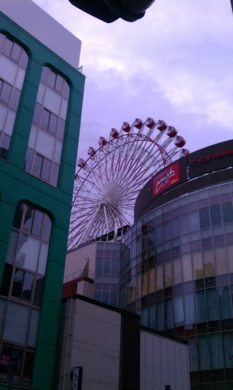
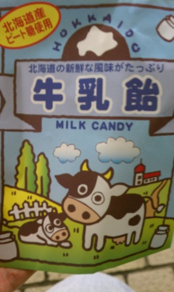
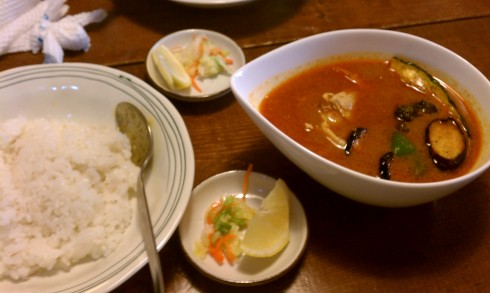
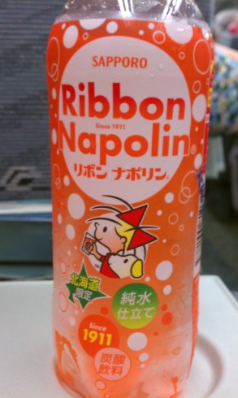
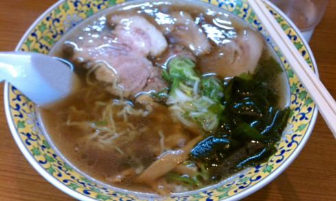

北海道旅行記(2012/08/25 - 2012/08/28)
下の妹(小4)が北大にいる上の妹に会いに行くということで，その付き添いとして北海道に行けることになった． 初日と帰る時だけ一緒で，それ以外は上の妹に引き渡して適当に動いていいということだったので，釧路と根室に行ってみることにした．
8/25
8時ごろ起きて，親に車で羽田空港まで送ってもらう．
飛行機に乗って新千歳空港着． Pasmoが使えないという掲示 が旅行気分を引き立てますね．
{kind=link}
空港線で札幌まで出て，駅ビルの「えぞっこ」でラーメンを食べる．

その後は北大植物園へ． 時期的に花を付けている植物はあまりなかったけど，それでも色々な植物が見られるのは楽しい． 温室に 大きい蓮があったり ， 食虫植物にクモが巣を張ってたり ，変な形の植物があったりして面白かった．
{kind=link}
{kind=link}
植物園を一周して自販機でキリンガラナを買う．

北海道限定らしい． 栄養ドリンクみたいな味でおいしい．
その後は北大に移動して妹のサークル(民謡研究会らしい)の講演を見て，すすきののホテルに移動．
夕食はコンビニで適当に買う． せっかく北海道なのでビールも買ってみる．

まあ普段ビール飲まないし，あまり好きでもないのでどう違うのかは良く分からない． 例によって1口目はおいしいけどその後は苦いし……という感じだった．
8/26
8時くらいに起きて ホテルのバイキングで朝食 ． 12時に上の妹と札幌で落ち合う予定だったのでそれまでの時間潰しを探してたら，すすきのに展望観覧車があるとの情報を見つけたので行ってみることに．
{kind=link}

10時20分くらいについたら，開店は11時かららしく入れなかった．仕方ないのですぐそばの狸小路をうろつく． 狸小路はよくあるアーケード型の商店街という感じ．土産屋で牛乳飴なるものが100円で売られていたので買った．

味はそのまま，砂糖の塊に牛乳を混ぜたような味．えらい甘い．
このへんでちょうど11時になったので観覧車に乗ってみる． 札幌テレビ塔が見えた ．
{kind=link}
南北線で札幌に移動して妹と合流．スープカレーを食べた．

ごはんをスープカレーに浸しつつ食べる． ただしカレーの量に対してごはんが少ないので，合間合間にスープカレーを普通のスープとしても食べるのが正しいっぽい．面白い． カレーとしてもスープとしても食べられる絶妙な味．
昼食をとってから下の妹を引き渡して，自分はスーパーおおぞらで釧路へ． 「キュンと北海道フリーパス」 を買うと，連続3日間は特急自由席までの列車が乗り放題になる． あと，北海道限定と書いてあるリボンナポリンを買う．
{kind=link}

Twitterに上げたら東京でも見たことあると言われた． 自分は見覚えないんだけどどうなんだろう……．
釧路が近づいてくるにつれて 霧が出てきた ．
{kind=link}
釧路駅着 ．霧がすごい．
{kind=link}
釧路から花咲線に接続して根室まで行けるようなので乗ろうかとも思ったけど，万が一宿が取れないとまずいので思いとどまる(根室は24時間営業のネカフェとかなさそうだし)． じゃらんで釧路の宿を探したら安くなってる部屋が見つかったので予約して適当に歩き回る． 日曜だからなのか時期的な問題なのか，とにかく人がいない！駅前の大通りを歩いてても1区画で1人見るかどうかくらいだし，19時くらいなのにどこの店も閉まっている．
空いている店が見つからなかったので，駅前の定食屋でラーメン．

いわゆる釧路ラーメンっぽい．細い縮れ麺がスープによく絡んでおいしい．
その2へ続く ．